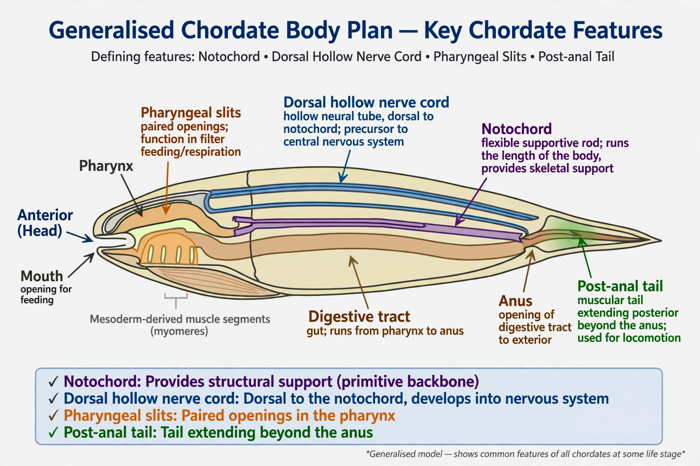

| Chordata | |
 The generalised chordate body plan | |
| Domain | Eukaryota |
|---|---|
| Kingdom | Animalia |
| Phylum | Chordata |
| Subphyla | Cephalochordata, Tunicata, Vertebrata |
| Species | ~65,000+ described |
A chordate is an animal belonging to the phylum Chordata. Chordates possess, at some stage of their development, five key features: a notochord, a dorsal hollow nerve cord, an endostyle (or its derivative, the thyroid), pharyngeal slits, and a post-anal tail. The phylum includes the vertebrates — fish, amphibians, reptiles, birds, and mammals including humans — as well as the invertebrate lancelets and tunicates.
The notochord is a flexible rod that provides skeletal support; in most vertebrates it is largely replaced by the vertebral column during development. Above it runs the dorsal hollow nerve cord, which in vertebrates becomes the brain and spinal cord. Pharyngeal slits, used ancestrally in filter feeding, persist in various forms (in humans, as structures of the ear, neck, and throat during embryonic development).
Chordates appear in the Cambrian explosion: fossils such as Pikaia from the Burgess Shale and the Chengjiang forms Haikouichthys and Myllokunmingia (~518 million years ago) are among the earliest candidates. Chordates belong to the deuterostomes, together with echinoderms and hemichordates.